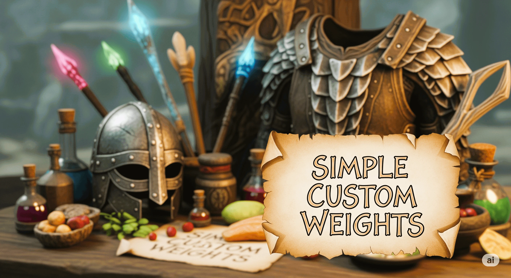

Simple Custom Weights Wiki
A lightweight SKSE plugin that adjusts item weights at runtime using a simple INI file. Patches are applied after game data loads and can be reloaded on demand without restarting the game.
Quick Start: Install via your mod manager, edit the INI at Data/SKSE/Plugins/SimpleCustomWeights.ini, and launch the game. Check the log file to verify it's working.
What You Can Adjust
Weapons & Armor
Potions & Poisons
Scrolls
Food & Drinks
Raw Food
Books & Notes
Ingredients
Soul Gems
Misc Items
Gold (fixed weight)
Keys (optional)
Lockpicks (optional)
Key Features
- Runtime patching — No ESP required, works with all mods
- Auto-reload on save load — Changes reapply when loading saves
- Papyrus reload function — Trigger reloads from scripts or MCM
- Smart blacklist — Quest items and VendorNoSale items are skipped
- Zero-weight protection — Prevents items from becoming weightless
Documentation
Getting Started
Install, verify it's working, and make your first INI edits.
INI Settings
Complete reference for all settings with defaults and examples.
Reload & Papyrus
How to reload weights at runtime and use the Papyrus function.
Compatibility
How it works with other mods and what items are affected.
Troubleshooting
Common problems, quick checks, and debugging tips.
Change Logs
Version history and release notes.